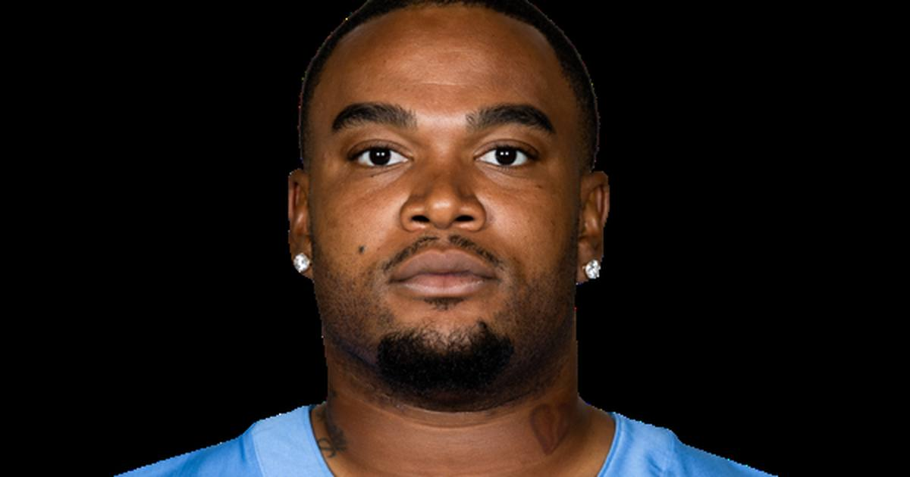

Titans Cut Jordan Elliott After Gun Incident at Practice Facility
After a practice fight with JC Latham, Elliott retrieved a gun from his car in the team parking lot. Coach Robert Saleh confirmed it Wednesday and called it 'a cry for help.'

The Tennessee Titans released defensive tackle Jordan Elliott on Tuesday — and on Wednesday, coach Robert Saleh confirmed the stunning reason why.
What happened
After a heated practice dispute with offensive tackle JC Latham last Thursday, Oct. 15, Elliott was told to leave the field. He removed his pads, stormed out of the locker room, and went to the players' parking lot to retrieve a gun from his car. Defensive tackle John Franklin-Myers stepped in and de-escalated the situation. No one filed a report with Nashville police.
Elliott was ruled out of the Titans' Week 6 loss to the Colts for personal reasons. Two days later, he was released.
"On Thursday, October 15, there was an incident at our team facility involving Jordan Elliott," the team said. "Following our review of the incident, we have made the decision to release Elliott from our roster."
Saleh's response
Saleh praised the organization and the league for pausing to get Elliott help rather than defaulting to law enforcement, calling the incident "a cry for help."
"Why would a great man, a great father, a man who shows up on time every day, works his ass off every day... go off the rails and grab a gun?" Saleh said. "To me, those are small signs of a cry for help... I will stand on the table for Jordan's character."
The NFL confirmed the Titans "promptly" notified the league, and the matter is under review.
The career
Elliott was in the first year of a two-year, $8 million deal signed in March. A third-round pick of the Browns in 2020, he's appeared in 102 games across seven seasons with Cleveland, San Francisco and Tennessee — 159 tackles, five sacks.
Sources: USA Today · The Tennessean
Gear up: Sports category post → [Fanatics](https://fanatics.93n6tx.net/WOLjqe): via Fanatics